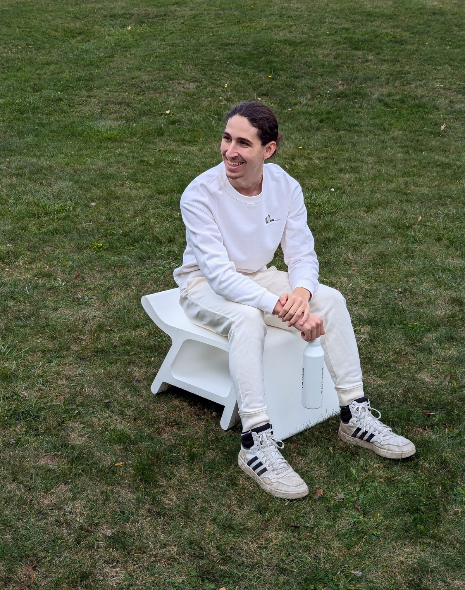
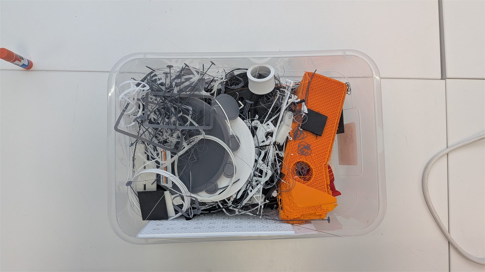
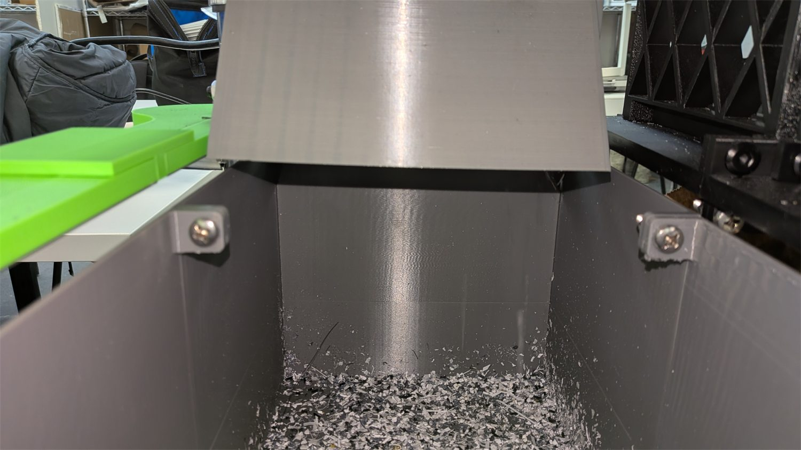
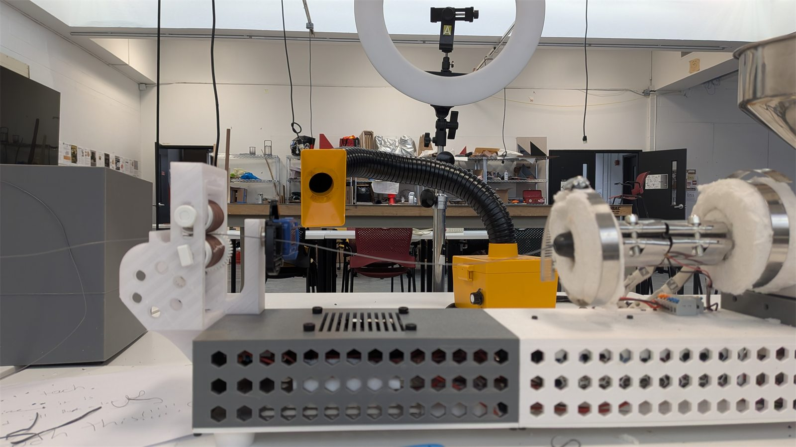
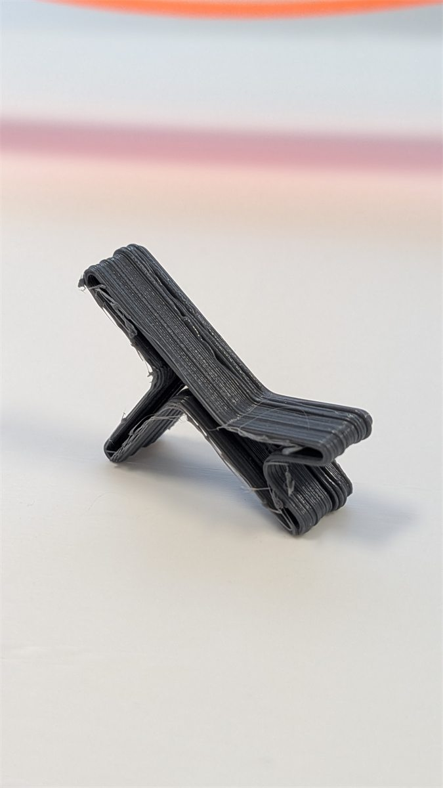
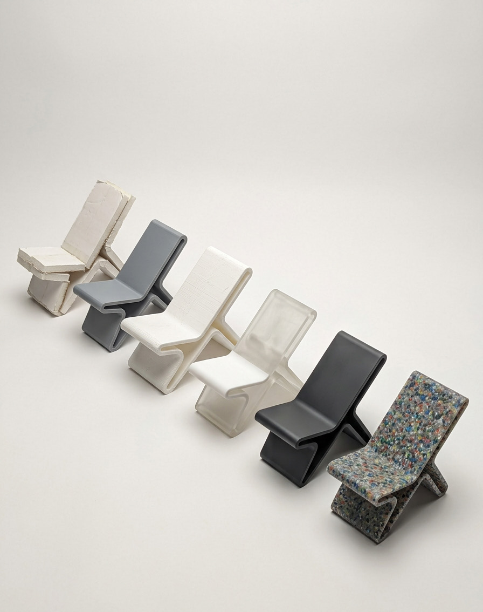

PlastiVistaIndustrial design
Capstone · 2026
PlastiVista
From discarded prints
to new products.
I designed and built a small production system that turns plastic shop waste into filament for 3D printing. I tested the material in print and used a full scale chair to test what changes when a part has to support a person.
Follow the material
Follow the material.
Each stage had to work with the output of the previous one. Select a stage to see the hardware, the material, and what changed along the way.

Start in the shop.
I collected failed prints and offcuts from the fabrication lab. That gave me a local source I could sort and work with instead of treating mixed plastic as one material.
See the material context
Make feedstock.
I built a shredder to break discarded parts into flakes and checked what came out before moving on to extrusion. The output needed to feed steadily through the hopper.
See the shredder build
Control the strand.
The auger sets the rate at which material moves through the heated barrel. The puller controls the strand diameter. I had to tune both together to produce filament that could print.
See the material tests
Print the geometry.
On April 11, 2026, I produced the chair form using filament made entirely from reclaimed lab plastic. It showed the loop could make a printable part. The full scale chair tests answered a different question: how the form behaves under load.
See what the chair taught meThe shell does the work.
I printed the first full scale chair to test proportion, ergonomics, and stability beyond the scale models. The main structure stayed stable in use, but the sides deformed slightly and stress collected at the corners.
My next iteration would put more material into the walls and corner transitions rather than raising infill everywhere.
Open the technical record